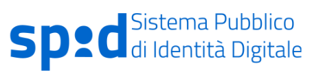

SPID (Sistema Pubblico di Identità Digitale) è il sistema nazionale che consente ai cittadini di accedere a tutti i servizi online della Pubblica Amministrazione con un’unica identità digitale, composta da username e password, utilizzabile da qualsiasi dispositivo: PC, smartphone, tablet.
Per ottenere un account SPID è necessario:
Durante la procedura di attivazione, è necessario utilizzare documenti di identità validi.
Una volta ottenute le credenziali SPID, è possibile accedere ai servizi online delle Pubbliche Amministrazioni e di soggetti privati aderenti (es. INPS, Agenzia delle Entrate, università, banche).
SPID garantisce diversi livelli di sicurezza per proteggere l’identità digitale dell’utente:
| 🔐 TRE LIVELLI DI SICUREZZA | |
|---|---|
| 1° Livello | Accesso con username e password. |
| 2° Livello | Username e password + OTP (codice temporaneo) via app o SMS. |
| 3° Livello | Oltre alle credenziali, è richiesto un dispositivo fisico (es. smart card) per identificazione sicura. |